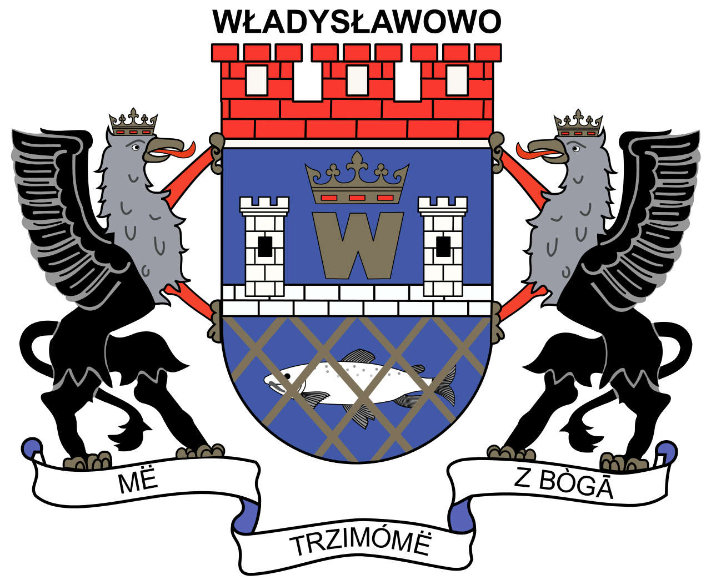

Władysławowo
Chwila dla historii
- W XII i XIV wieku odnotowano miejscowość rybacką o nazwie (łac.) Vela Ves (Wielka Wieś) oraz wsie pomocnicze Cetniewo i Poczernino.
- Następnie w niewielkiej odległości od fortu powstał port notowany w latach 1635 i 1636 jako Władysławowo.
- Wiosną 1936 roku rozpoczęto budowę portu rybackiego, którego otwarcie nastąpiło 3 maja 1938 roku; na cześć króla Władysława IV port nazwano Władysławowem.
Chwila dla zabytków
- kościół pw. Wniebowzięcia NMP, wybudowany w latach 1932-1936
- dom przy ul. Merkleina 4, wybudowany w 1922 r.
- dom gen. Hallera, wybudowany w 1922 r. (ul. Morska 6)
Kilka informacji
| Województwo |
Pomorskie |
| Prawa miejskie |
1963 |
| Burmistrz |
Roman Kużel |
| Liczba ludności |
10 009 |
| Powiat |
pucki |
Quiz
Kacper Kuś 2TB